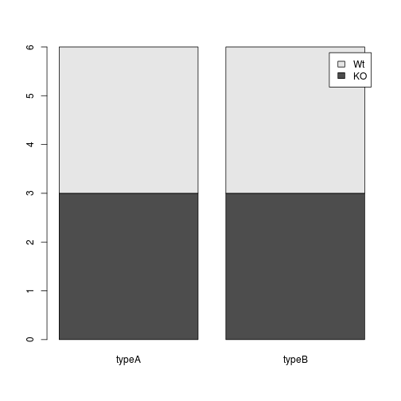

Analyzing and Plotting Data
Learning Objectives
- Generating simple statistics from the data (across levels of a factor)
- A few basic plots using mock data
- Basic plots using RNA-Seq data: scatter plots, boxplots, histograms (base functions)
- Introducing ggplot2: scatter plots, boxplots, histograms (base functions)
- Advanced plots: correlation heat map ,scatterplot, PCA, histogram of average values
- Writing images (and other things) to file
- Not covered: working with missing values? unique?
Calculating statistics
Let's get a closer look at our data. Each column represents a sample in our experiment, and each sample has ~38K values corresponding to the expression of different transcripts. Suppose we wanted to compute the average value for a sample, or the minimum and maximum values? The R base package provides many built-in functions such as mean, median, min and max, range. Try computing the mean for "sample1" (Hint: apply what you have learned previously on indexing)
mean(annotated_rpkm[,'sample1'])Hmm, we just get NA. That's because we don't have the values for every transcript in this sample and missing data is recorded as NA. By default, all R functions operating on vectors that contains missing data will return NA. It's a way to make sure that users know they have missing data, and make a conscious decision on how to deal with it.
When dealing with simple statistics like the mean, the easiest way to ignore NA (the missing data) is to use na.rm=TRUE (rm stands for remove). Try computing the mean again, also test out some of the other functions.
# Mean
mean(annotated_rpkm[,'sample1'], na.rm=T)
# Maximum
max(annotated_rpkm[,'sample1'], na.rm=T)
# Minimum
min(annotated_rpkm[,'sample1'], na.rm=T)In some cases, it might be useful to remove the missing data from the vector. For this purpose, R comes with the function na.omit to generate a vector that has NA's removed. For some applications, it's useful to keep all observations, for others, it might be best to remove all observations that contain missing data. The function complete.cases() returns a logical vector indicating which rows have no missing values. We can use the logical vector to remove rows that contain at least one missing observation. If we do this on our data, how many rows are we left with?
rpkm_noNA <- annotated_rpkm[complete.cases(annotated_rpkm), ]Challenge
Compute the standard error for "sample1". (hints: there is no built-in function to compute standard errors, but there may be functions for the different components of the formula)
The apply Function
To obtain mean values for all samples we can use mean on each column individually, but there is also an easier way to go about it. The apply family of functions keep you from having to write loops (R is bad at looping) to perform some sort of operation on every row or column of a data matrix or a data frame. The family includes several functions, each differing slightly on the inputs or outputs.
base::apply Apply Functions Over Array Margins
base::by Apply a Function to a Data Frame Split by Factors
base::eapply Apply a Function Over Values in an Environment
base::lapply Apply a Function over a List or Vector
base::mapply Apply a Function to Multiple List or Vector Arguments
base::rapply Recursively Apply a Function to a List
base::tapply Apply a Function Over a Ragged ArrayWe will be using apply in our examples today, but do take a moment on your own to explore the many options that are available. The apply function returns a vector or array or list of values obtained by applying a function to margins of an array or matrix. We know about vectors/arrays and functions, but what are these “margins”? Margins are referring to either the rows (denoted by 1), the columns (denoted by 2) or both (1:2). By “both”, we mean apply the function to each individual value. Let's try this with the mean function on our data with NAs removed rpkm_noNA, but remember to index and remove the first column of gene symbols before input (because gene symbols are characters and not numeric, the mean function will return an error).
samplemeans <- apply(rpkm_noNA[,2:13], 2, mean) How long is the vector of values returned?
Basic plots in R
The mathematician Richard Hamming once said, "The purpose of computing is insight, not numbers", and the best way to develop insight is often to visualize data. Visualization deserves an entire lecture (or course) of its own, but we can explore a few features of R's base plotting package.
When we are working with large sets of numbers it can be useful to display that information graphically. R has a number of built-in tools for basic graph types such as hisotgrams, scatter plots, bar charts, boxplots and much more. We'll test a few of these out here on our samplemeans vector, but first we will create a combined data frame that maps our metadata to the sample mean values.
# Create a combined data frame
all(rownames(metadata) == names(samplemeans)) # sanity check for sample order## [1] TRUEdf <- cbind(metadata, samplemeans) Let's start with a scatterplot. A scatter plot provides a graphical view of the relationship between two sets of numbers. We don't have a variable in our metadata that is a continous variable, so there is nothing to plot it against but we can plot the values against their index values just to demonstrate the function.
plot(samplemeans)
Each point represents a sample and the value on the x-axis is the sample number, where the values on the y-axis correspond to the average expression for that sample. For any plot you can customize many features of your graphs (fonts, colors, axes, titles) through graphic options For this scatterplot we'll add a title to the plot with main in addition to changing the shape of the data point using pch.
plot(samplemeans, pch=8)
plot(samplemeans, pch=8, main="Scatter plot of mean values")
In the case of our data, a barplot would be much more useful. We can use barplot to draw a single bar representing each sample and the height indicates the average expression level.
barplot(samplemeans)
The sample names appear to be too large for the plot, we can change that by changing the cex.names value.
barplot(samplemeans, cex.names=0.5)
The names are too small to read. Alternatively we can also just change the names to be numeric values and keep the same size.
barplot(samplemeans, names.arg=c(1:12)) # supply numbers as labels
We can also flip the axes so that the plot is projected horizontally.
barplot(samplemeans, names.arg=c(1:12), horiz=TRUE) 
If we are interested in an overall distribution of values, histogram is a plot very commonly used. It plots the frequencies that data appears within certain ranges. To plot a histogram of the data use the hist command:
hist(samplemeans)
The range of values for sample means is 22 to 39. As you can see R will automatically calculate the intervals to use. There are many options to determine how to break up the intervals. Let's increase the number of breaks to see how that changes the plot:
hist(samplemeans, xlab="Mean expression level", main="", breaks=20) 
Similar to the other plots we can tweak the aesthetics. Let's color in the bar and remove the borders:
hist(samplemeans, xlab="Mean expression level", main="", col="darkgrey", border=FALSE) 
Using addiitonal sample information from our metadata, we can use plots to compare values between the two different celltypes 'typeA' and 'typeB' using a boxplot. A boxplot provides a graphical view of the median, quartiles, maximum, and minimum of a data set.
# Boxplot
boxplot(samplemeans~celltype, df)
Similar to the plots above, we can pass in arguments to add in extras like plot title, axis labels and colors.
boxplot(samplemeans~celltype, df, col=c("blue","red"),
main="Average expression differences between celltypes", ylab="Expression")